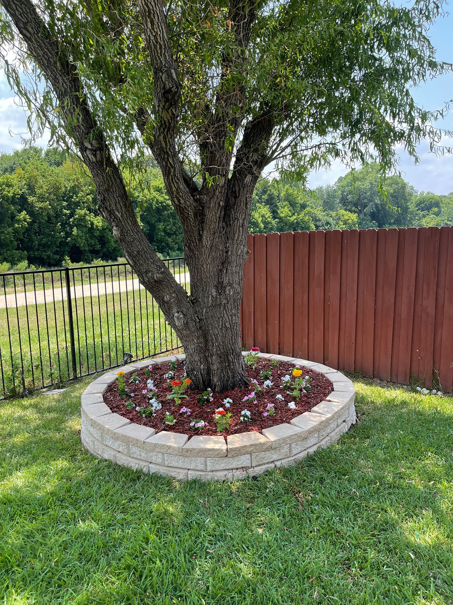
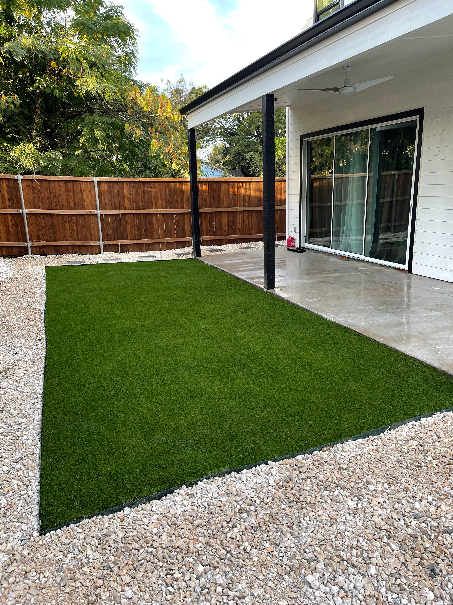
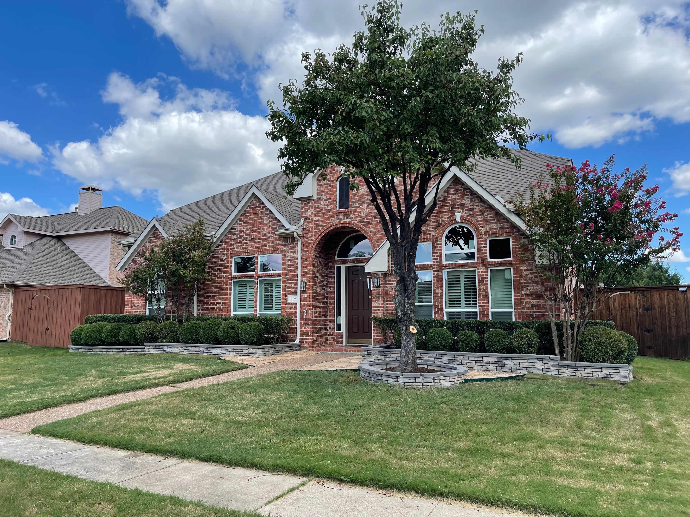
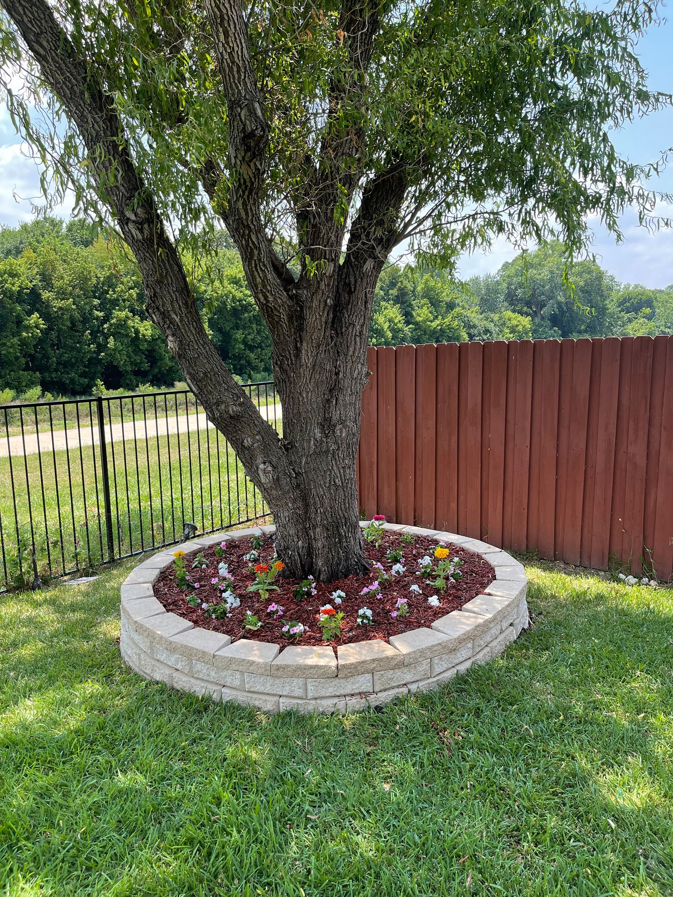
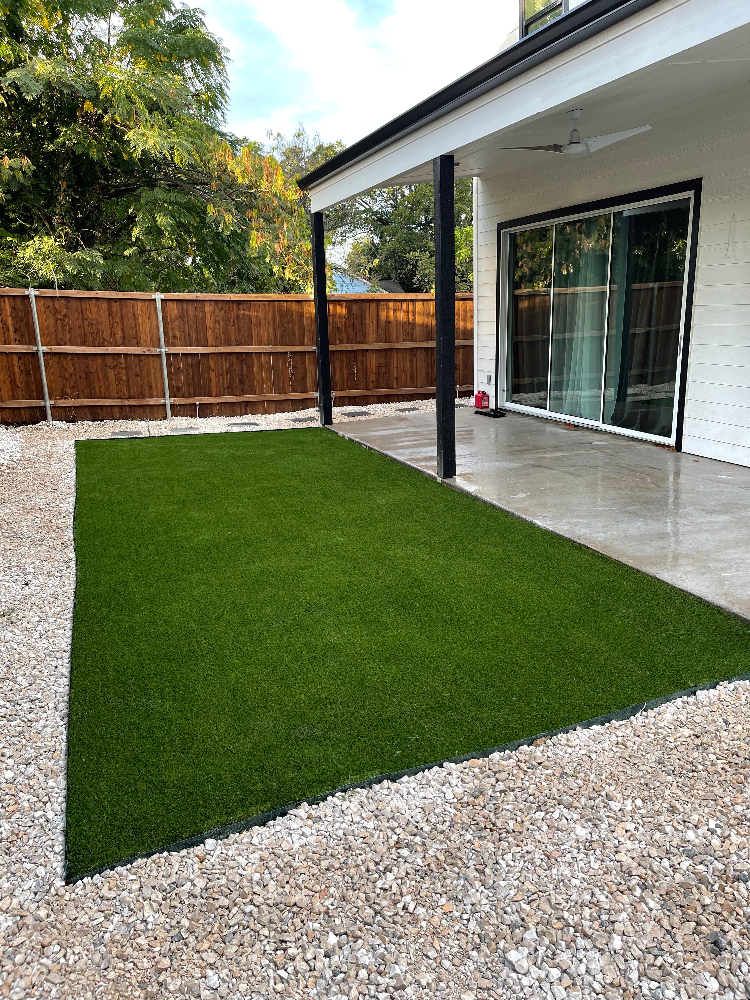
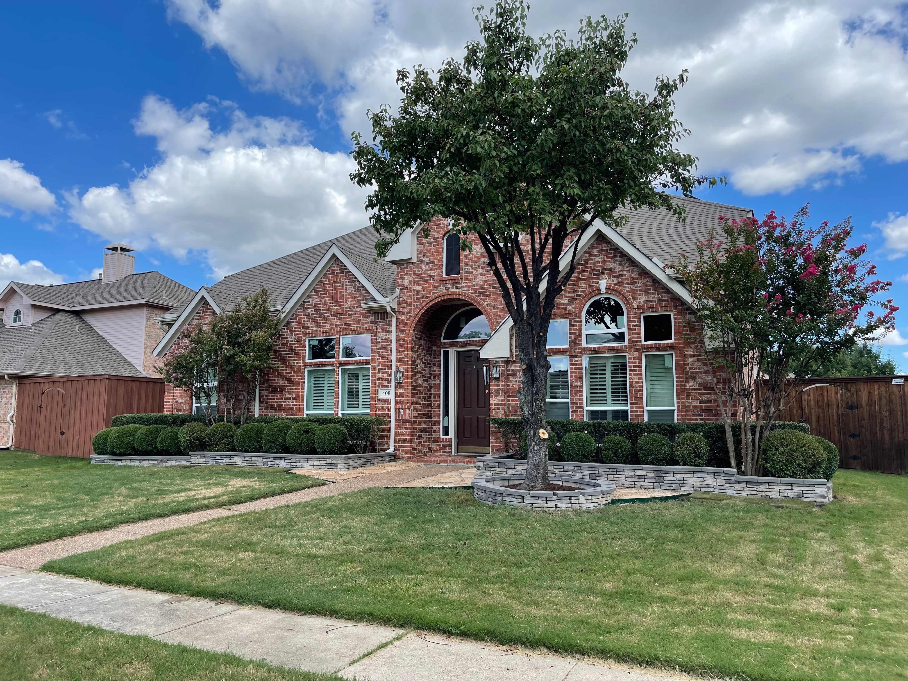

Welcome!
In need of your Yard mowed, Tree's trimmed, Mulch Install? Wanting your property to look it's best year round? Look no further!
Ike Lawn & Landscaping has the solution for you
Our Services Include
Weekly or Bi-Weekly Mowing // Shrub Trimming // Tree Trimming // Property maintenance // Porter Service // Fall/Spring Clean-ups // Much more...
Pay InvoiceAbout Us
Ike Lawn & Landscaping is locally owned and operated and specializes in the areas of lawn care maintenance, landscaping, and any property service needs for Residential and Commercial Customers. We service clients in Coppell, Lewisville, Carrolton, Flower Mound, Denton, Corinth, Dallas, and surrounding areas.
We know the importance of being dependable, professional and trustworthy and we make it our goal to provide you the best lawn care and landscaping services possible with excellent customer service.
Photo Gallery
 





Services
Commercial & Residential
Lawn Care

We offer both Weekly and Bi-Weekly plans.
- Mowing
- Edging
- Small trash Pick- Up (If applicable to Yard)
- Blowing away Grass Clippings on Sidewalks. etc
Landscaping
No Landscaping Job is too small! We can do your seasonal planting for you!
Mulching
Mulching flower beds can be an important factor to your plants health. It is recommended that you have new mulch laid at least once a year. Mulching can help from the following:
- Keep weeds down
- Cools the soil and also helps conserve the soil moisture
- Prevents Soil Erosion
- Maintains Soil Nutrients
Tree/Shrub Pruning
Pruning or trimming your trees and shrubs can be very beneficial. Removing dead, dying or diseased portions of shrubs and tree's prevent diseases from spreading and insects from settling into deadwood. Pruning the right way at the right time can enhance plant growth, reduce disease and insect infestations, improve flowering and fruiting and improve the overall health of the plant.
Fall/Spring Clean-Ups

Spring clean-ups are very important to start off the year with in order to promote a healthy lawn. For Spring Clean-ups we will blow all debris in flower beds and trim and mow the lawn.
Fall clean-ups are also very important in the fall. Leaving leaves on your lawn is not only harmful but can be very damaging to the lawn. The leaves get wet and can form mold or any other disease over the winter which will effect your lawn and how it looks in the springtime. For Fall Clean-ups we blow all leaves and debris from flower bed and lawn.
Porter Service
Trash can be a very disturbing sight. Let us do all the work and pick up the trash for you! We offer services to come to your property and pick up any trash so we can keep make sure your property is looking it's best year round.
Testimonials
Ike and Manuel were so awesome!! I needed a 10’x3’ bed cleared out ASAP so I could start a fall/winter lettuce garden. It was a bit out of my league. Ike answered my call and guided me through a quote and appointment time via phone. It was so easy!!! Thank you so much!!
Heather Smith
Removed my messy existing garden, laid mulch and added a metal border for a clean look. Definitely recommend!

Tiana Culpepper
Ike and his crew really helped me out. I raked several HUGE piles of leaves and allot of tree trimmings. I never could have got it bagged and moved out alone without them. Thanks Ike!
Christopher Milton
What are You Waiting For?
Write us or give us a call now! We’re always happy to provide a free consultation and help out with any questions you may ask!
Request a Free Estimate!